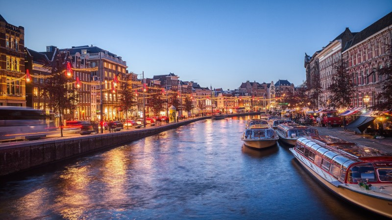

Autres destinations

Amsterdam est la capitale culturelle et financière des Pays-Bas — une ville de canaux, de musées de classe mondiale et de sièges sociaux internationaux. Reliée à Brussels Airport par l'autoroute E19 sur 205 km, Amsterdam est une destination régulière pour notre clientèle corporate et diplomatique. Nous assurons ces liaisons longue distance dans le confort absolu de nos Mercedes S-Class et V-Class.
Le trajet depuis BRU vers Amsterdam s'effectue entièrement par autoroute via l'E19 puis l'A4. En conditions normales, le trajet dure entre 2h 15 et 2h 45. Nos chauffeurs expérimentés sur cette route connaissent les points de congestion récurrents (Anvers ring, Schiphol accès) et adaptent leurs horaires de départ pour garantir l'arrivée à l'heure.
Pour les missions longue distance comme Amsterdam, nous proposons systématiquement un chauffeur dédié avec pause autorisée selon les réglementations européennes du transport. Le véhicule est entièrement mis à disposition pour la durée du trajet aller et retour si souhaité.
Transferts depuis Brussels Airport (BRU) vers l'aéroport Amsterdam Schiphol pour correspondances internationales, ou prise en charge de passagers arrivant à Schiphol pour des destinations belges. Service ponctuel et discret.
Rijksmuseum, Van Gogh Museum, Stedelijk Museum, Anne Frank House, Hermitage Amsterdam — transferts culturels et touristiques haut de gamme, avec chauffeur disponible à l'heure pour les groupes VIP.
World Trade Center Amsterdam (Schiphol), ING Group, ABN AMRO, Booking.com, Adyen, KPMG — la place financière néerlandaise attire des délégations du monde entier que nous transfèrons depuis BRU en toute discrétion.
RAI Amsterdam Convention Centre, Amsterdam ArenA, AFAS Live — l'un des plus grands hubs événementiels d'Europe. Navettes de groupe depuis Bruxelles disponibles pour salons, conférences et événements sportifs.
Hotel Krasnapolsky, Conservatorium Hotel, Waldorf Astoria Amsterdam, The Dylan, Sofitel The Grand — les plus beaux palaces et hôtels de design d'Amsterdam, accessibles en moins de 3 heures depuis BRU.
Terminal de croisières Amsterdam (Passenger Terminal), Port d'Amsterdam — accueil et dépôt de passagers de croisière, transferts vers et depuis les paquebots de luxe avec assistance bagages lourds.